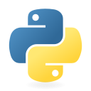
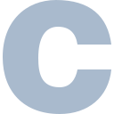
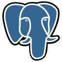
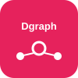

Communication claire
Je sais expliquer des sujets techniques à des profils non techniques (lycéens, équipes métier, interlocuteurs RH).
Développeur Full-Stack · Infrastructure & Sécurité IAM · IA
Middleware hospitalier microservices : backend Go (BFF), OIDC/IAM, permissions ReBAC/ABAC, frontend React/TypeScript, DataHouse Iceberg et observabilité Redis.
Prototype microservices hospitalier : architecture IAM complète (OIDC, REBAC, ABAC), base graphe Dgraph et monitoring Prometheus/Grafana.
Main-d'œuvre, menuiserie, pose de stores, plomberie et électricité.
Deep Learning multitâche (MoE), EfficientNetB0 + TFLite + app Android Kotlin/Jetpack Compose.
Pipeline NLP de collecte et classification de brevets 6G avec dashboard Streamlit.
Application web F1 avec authentification, résultats et import CSV (PHP 8 + MySQL).
Ce que c'est : les langages sont la base pour construire le frontend, le backend, les scripts et les requêtes.
Pourquoi je les utilise : je choisis chaque langage selon le besoin du projet : Go pour la performance backend, TypeScript/JS pour l'interface, Python pour l'IA et l'ETL.

Python Java
Java
 JavaScript
JavaScript
 TypeScript
TypeScript

C PHP SQL
SQL
Ce que c'est : un ensemble de modèles et pipelines pour prédire, classifier et extraire de la valeur à partir des données.
Pourquoi je les utilise : pour analyser des données complexes (visage, textes, signaux biologiques) et intégrer des briques IA utiles dans des applications concrètes.
Ce que c'est : la couche qui expose les services, applique les règles métier et centralise les accès aux données.
Pourquoi je les utilise : pour sécuriser les échanges, éviter les appels directs côté frontend et garder une architecture propre et maintenable.
 Node.js
PHP
GraphQL · REST
OIDC · PKCE
Node.js
PHP
GraphQL · REST
OIDC · PKCE
Ce que c'est : la partie visible pour l'utilisateur, où l'on gère l'interface, l'expérience et les workflows métier.
Pourquoi je les utilise : pour proposer des écrans clairs aux équipes (admin, labo, RH), avec des actions rapides et une navigation fiable.
 React 19
TypeScript
HTML5
React 19
TypeScript
HTML5
 CSS3
Streamlit
CSS3
Streamlit
Ce que c'est : l'ensemble des outils qui permettent de déployer, superviser et faire évoluer la plateforme.
Pourquoi je les utilise : pour avoir des environnements stables, reproductibles et observables, du poste local jusqu'à la production.
 Docker / Compose
Docker / Compose
 Nginx
Prometheus
Grafana
Linux
Nginx
Prometheus
Grafana
Linux
 Git · Agile
Git · Agile
Ce que c'est : la gestion des identités et des droits d'accès, avec contrôle fin des permissions.
Pourquoi je les utilise : dans un contexte hospitalier, la sécurité est critique: il faut tracer qui accède à quoi et appliquer des règles strictes.
Ce que c'est : les moteurs de stockage et de requête qui portent les données transactionnelles, graphe et analytiques.
Pourquoi je les utilise : pour gérer à la fois les données opérationnelles (utilisateurs, formulaires, droits) et les données NGS pour l'analyse IA.

PostgreSQLMySQL
 Redis
Redis

Dgraph Iceberg · Nessie · Trino DuckDB · SeaweedFSFormation professionnalisante et pluridisciplinaire en informatique.
Culture scientifique et habitude de travail intense.
Option Sciences de l'Ingénieur.
Compétences comportementales mobilisées en projet, en alternance et dans mes activités annexes.
Je sais expliquer des sujets techniques à des profils non techniques (lycéens, équipes métier, interlocuteurs RH).
Je vulgarise les notions complexes pour rendre les choix d'orientation ou les décisions techniques plus accessibles.
Je collabore facilement avec des profils variés: développeurs, bioinformaticiens, responsables fonctionnels et utilisateurs.
Le coaching sportif m'a appris à encadrer un groupe, poser un cadre et faire progresser chacun sur la durée.
J'accorde de l'importance à la qualité, à la traçabilité et au respect des bonnes pratiques, surtout en contexte sensible.
Je m'adapte rapidement à de nouveaux environnements, outils et contraintes projet, sans perdre l'objectif métier.
Je gère mes priorités entre alternance, études et engagements externes avec une logique de planification réaliste.
Face à un blocage, j'analyse, je teste, puis je propose une solution concrète plutôt que de rester sur le problème.